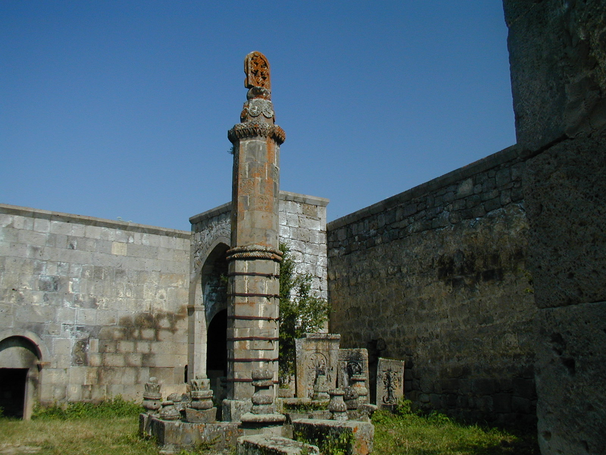
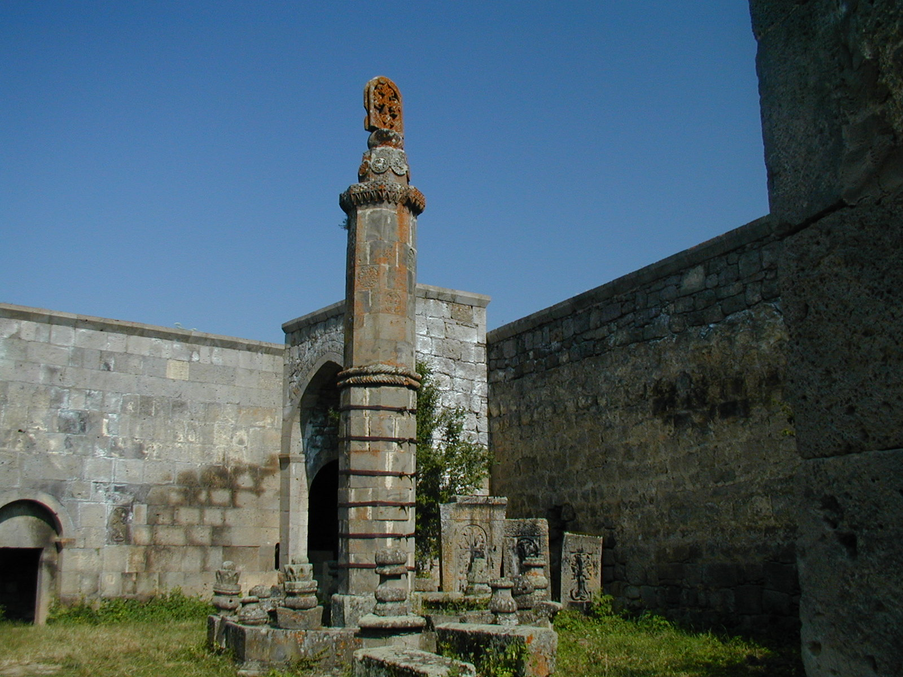

Tatev
(Tatev Monastery)
.jpg)
The Tatev Monastery (Armenian: Տաթևի վանք, romanized: Tat'evi vank') is a 9th-century Armenian Apostolic monastery located on a large basalt plateau near the village of Tatev in the Syunik Province in southeastern Armenia. The term "Tatev" usually refers to the monastery. The monastic ensemble stands on the edge of a deep gorge of the Vorotan River. Tatev is known as the bishopric seat of Syunik and played a significant role in the history of the region as a center of economic, political, spiritual and cultural activity.
The Monastery of Tatev has been described as one of the two best-known monasteries in Armenia, along with Noravank in the province of Vayots Dzor.
In the 14th and 15th centuries, the monastery hosted one of the most important Armenian medieval universities, the University of Tatev, which contributed to the advancement of science, religion and philosophy, reproduction of books and development of miniature painting. Scholars of the Tatev University contributed to the preservation of Armenian culture and creed during one of its most turbulent periods in its history.
The restoration of the monastery, re-establishing its educational legacy and reviving monastic life at Tatev is one of the main goals of Tatev Revival Program, a part of which is the Wings of Tatev aerial tramway, a cableway from Tatev to the village of Halidzor, which was opened in October 2010. It was included in the Guinness World Records as world's "longest non-stop double track cable car.
Etymology
According to tradition, Tatev Monastery is named after Eustateus, a disciple of St. Thaddeus the Apostle, who preached and was martyred in this region. His name has evolved to Tatev.
Folk etymology includes a legend telling of an event that is tied to the construction of the main church, where an apprentice secretly climbs to the top of its steeple intending to place a cross of his own design. However, the apprentice is spotted by his master during his descent. Shocked by his discovery, the apprentice loses his foothold and falls into the abyss as he calls upon God to grant him wings, which, in Armenian is: "Ta Tev".
History
(Tatev Monastry, Syunik Province, Armenia)

Tatev Monastery is located in South-East Armenia, in the area of ancient Armenian Syunik, not far from the city of Goris and 280 km away from Yerevan. The Tatev plateau has been in use since pre-Christian times, hosting a pagan temple. The temple was replaced with a modest church following the Christianization of Armenia in the 4th century.
Development of the Tatev Monastery began in the 9th century when it became the seat of the bishop of Syunik. In his History of the Province of Syunik, historian Stepanos Orbelian describes the construction of a new church near the old one in 848 through the financial assistance of Prince Philip of Syunik. With the growth of economic and political importance of the centre, the aging buildings no longer suited its requirements, and thus Bishop Hovhannes (John) obtained the financial assistance of Prince Ashot of Syunik to construct the new monastery.
In the beginning of the 11th century, Tatev hosted around 1,000 monks and a large number of artisans. In 1044, armed forces of neighbouring emirates destroyed the St. Gregory Church and its surrounding buildings, which were reconstructed soon after that. In 1087, the church of St. Mary was built to the north of the complex. The monastery suffered significant damage during Seljuk invasions in the 12th century and the earthquake in 1136. In 1170, Seljuk Turks plundered the Monastery and burnt some 10,000 manuscripts. The Monastery was rebuilt through the efforts of Bishop Stepanos near the end of the 13th century.
The Monastery was granted an exemption from taxes during Mongol rule. It regained its economic strength with the assistance of the Orbelian family. Its influence grew further when, in 1286, the Orbelians assumed control of the monastery, Stepanos Orbelian was consecrated metropolitan and succeeded in reuniting a number of surrounding dioceses within its realm. With the establishment of the university in the 14th century Tatev became a principal centre of Armenian culture.
During Timur lane's campaigns into Syunik (1381–1387), Tatev was looted, burnt, and dispossessed of a significant portion of its territories. The Monastery received an additional blow during Shah Rukh's invasion in 1434.
The monastery was reborn in the 17th and 18th centuries; its structures restored and new ones were added. It was looted again during the incursions of Persian forces led by Aga Mahmet Khan in 1796. In 1836, Czarist Russia put an end to the metropolitan authorities of Tatev through the imposition of Pologenia, and Syunik became part of the Diocese of Yerevan.
On 26 April 1921, the 2nd Pan-Zangezurian congress, held in Tatev, announced the independence of the Republic of Mountainous Armenia. The state included the regions of Tatev canyon, Sisian and Gndevaz. The city of Goris became the capital of the unrecognized state with Garegin Nzhdeh as its supreme commander.
The monastery was seriously damaged after an earthquake in 1931, the dome of the Sts. Paul and Peter church and the bell tower were destroyed. In the latter years the Sts. Paul and Peter church was reconstructed, but the bell tower remains destroyed up to today.
Buildings of the monastery
.png)
The fortified Tatev monastery consists of three churches - Saints Paul and Peter Church, Saint Gregory the Illuminator's Church, and the Holy Mother of God Church, a library, refectory, bell tower, mausoleum, as well as other administrative and auxiliary buildings.
The church of Saints Paul and Peter was built between 895 and 906. An arched hall was added adjacent to the southern wall of the church in 1043. Soon after in 1087, the church of the Holy Mother of God was added along the northern fortifications. In 1295, the church of Saint Gregory the Illuminator, which had been destroyed during an earthquake, was replaced with a new one through the initiative of then bishop Stepanos Orbelian. In 1787, the mausoleum of the Armenian theologian Gregory of Tatev was built adjacent to the western wall of the Church of Saint Gregory and by the end of 19th century a vestibule and a belfry were added at the western entrance of the church of Saints Paul and Peter.
Aside from the buildings, the monastery boasts an upright pendulum, known as the Gavazan (staff). This column was built in the 10th century following the completion of the Paul and Peter church and has survived numerous invasions and earthquakes relatively unscathed.
In the 14th century, fortifications were built to the south, west and north of the monastery with buildings for habitation, administration and other purposes. In the 18th century, additions were made to house the bishop's residence, cells for the monks, storage, dining hall, kitchen, bakery and winery. Sixteen rectangular classrooms, covered with arched ceilings, were built along the main fortifications.
To the northeast of the monastery, outside of the fortifications is the olive press. It has four production rooms including two domed storage rooms and pressing chambers with arched ceilings. This mill is one of the best preserved in Armenia and is an excellent illustration of olive presses built in the region during the Middle Ages.
The school buildings of the Tatev Monastery characterize the architectural style of monastic educational architecture used in the late medieval period.
Saints Paul and Peter Church
.jpg)
The church of Saints Paul and Peter is dedicated to the two apostles of Christ. It is also referred to as the church of the Apostles or the cathedral. It's likely that this church was built on the location of the old church and also inherited its name.On the western wall of the Church is preserved the dedicational cross-stone installed by Bishop Hovhannes that provides important historical information regarding the construction of the Church.
The Saints Paul and Peter Church is the oldest remaining construction within the complex of the Monastery. It was built with the initiative of Bishop Hovhannes and the financial assistance of reigning Prince Ashot, his wife Princess Shushan and Princes Grigor Supan and Dzagik.
The church is a rectangular basilica that extends from west to east. The apse on the east side contains the altar, and is flanked by two depositories; one on either side.The central dome is supported by two pillars on the eastern side, while on the west, annexes act as abutments. The roof has a two tiered, inclined style covered with large tiles. The inside and outside walls are covered with hewn stones. The walls and dome have narrow windows that allow the nave to be illuminated. The eastern façade contains niches that are crowned with bas-relief portraits of its benefactors, Prince Ashot and Princess Shushan, each bordered by protective snakes.
In 930 the church walls were decorated with frescoes upon the initiative of Bishop Hakob Dvinetsi. The work was carried out by French artists invited from Constantinople working alongside local Armenian painters.The faces of the main characters have eastern features, and all inscriptions are in Armenian. The eastern apse is decorated with a throned Christ with His disciples and saints. The western wall portrays the Last Judgment, while the northern wall illustrates scenes from the Nativity of Jesus. Little of those decorations survive today.
Saint Gregory the Illuminator's Church
The Saint Gregory Church is adjacent to the southern wall of the Sts. Paul and Peter Cathedral. The church was first built between 836 and 848 with the order and financial support of Prince Philipé of Syunik. It was renovated in the 11th century immediately after the Seljuk campaigns, but was completely destroyed again during the earthquake of 1138. It remained in this condition for more than a century until its reconstruction in 1295.
The church of St. Gregory is simple in construction. It does not have a dome. It has three support pillars in its northern and southern walls that bear the arches upon which the inclined roof tiles are installed. Its entrance is decorated with fine geometric carvings.
Holy Mother of God Church
The Holy Mother of God Church or the St. Astvatsatsin Church is located along the northern fortifications of the monastic complex. It was built in 1087 as a second storey to the covered mausoleum near the entrance. It was severely damaged during the earthquake of 1931, but was restored in the late 20th century.
Gavazan (the pendulous column)
The pendulous column (called Gavazan Siun) is a monument dedicated to the Holy trinity. It is located to the south of the Cathedral.It comprises a column about eight meters tall crowned with a khachkar-type cross. The column has been dated to the 10th century; the cross is no earlier than the 18th century but its form may be based on an earlier example.
The key purpose of the column is to alert of minor earth tremors and thus giving early warning signals about possible earthquakes. The column returns to its vertical position after it moves.
Monastic Feudalism
Tatev Monastery was a feudal organization. It became a prominent and influential monastic centre soon after its foundation, possessing expansive areas of land and a large number of villages. The earliest references to its foundation are described in Stepanos Orbelian's History of the Province of Syunik, where Orbelian describes the accord through which Prince Ashot, son of Prince Philipé of Syunik delineated its borders.
Soon after the transfer of the lands, peasants of Tsouraberd (present day Svarants), Tamalek, Aveladasht and other villages, rejected the authority of the Monastery and began a prolonged struggle against it. Twice the protests transformed into open uprisings and continued, with some interruptions, until 990 when King Vasak of Syunik razed Tsouraberd and dispersed its population . Historians link the uprisings to the Tondrakian Heresy, which appeared in Armenian history at roughly the same time as the peasant uprisings (9th–11th centuries) and which was also suppressed around the same time.
The Tatev bishopric owned 47 villages and received tithes from 677 other villages.It gained such economic power that in 940–950 Bishop Hakob attempted to secede from the Mother See of Etchmiadzin. His separatist dreams were dashed when Catholicos Anania Mokatsi anathematized him. Surrounding regions benefited from Tatev's weakened position, rejected its supremacy and established their own dioceses. In 958, Bishop Vahan (later Catholicos Vahan Syunetsi) recovered some of the bishopric rights and properties. In 1006, Bishop Hovhannes V succeeded in re-establishing the metropolitan privileges of the diocese.
Tatev University
Tatev Monastery has played a notable role in the advancement of cultural life of Armenia. In his History of the Province of Syunik, Stepanos Orbelian describes how the monastery served as the repository for thousands of valuable manuscripts, monastic and official documents and contracts. The Monastery hosted a university that operated between 1390 and 1434, where instructors were educated and trained not only for the province of Syunik, but also for other regions of Armenia.
In the beginning of the 1340s, following the decline of the University of Gladzor, Hovhan Vorotnetsi departed from Vayots Dzor, and arriving in Dzghook, Vorotn, he obtained the blessing and patronage of the Orbelian princes to advance the educational system at Tatev. Vorotnetsi used his experience from Gladzor to revise the educational plan and to organize the admission and classification of students and instructors. This enabled Tatev to be transformed to a deserving university within a short period of time,attracting students from various regions of Greater Armenia and Cilicia.
Vorotnetsi organized the university into three departments – study of Armenian and foreign scriptures, the study of scriptural arts, and finally, the study of music. The first included the study of humanities and social sciences, philosophy, oration, grammar, literature and history. The second focused on calligraphy, artistic design of books and the painting of miniatures and murals. The third department included ancient music and musicology.
Following the death of Vorotnetsi in 1388, Grigor Tatevatsi assumed the role of abbot. He succeeded in raising the standard of the University to unprecedented heights. During his tenure, Tatev experienced its most dynamic and creative period. Topics of instruction included Armenian literature, interpretation and analysis of the Old and New Testaments, works of the holy fathers, works of Plato, Aristotle, Philo of Alexandria and Porphyry, and their analysis.
The University of Tatev became the leading scientific and cultural centre of the time. Its achievements appear even more significant when they are viewed in context with the turbulent political situation and endless devastations of the period, when the University was occasionally forced to migrate to avoid persecutions from invading forces.
Tatev University led the effort to combat the influence of the Fratres Unitores in Armenia. The Unitores were an Armenian branch of the Dominican order and the result of an initiative taken by Pope John XXII to extend the influence of Holy See of Rome onto Asia and to Latinize Greater Armenia. Scholars of Tatev University fought against the proselytizing of the Unitores and sought to diminish their influence on the Armenian Church and people.
Following the collapse of the Armenian Kingdom of Cilicia in 1375, scholars of Tatev, led by Grigor Tatevatsi and then his followers, especially Tovma Metsobetsi and Hovhannes Hermonetsi played an important role in convincing the authorities to repatriate of the supreme patriarchal throne of the Armenian Church from Sis to Etchmiadzin, the original See of Saint Gregory the Illuminator.The effort succeeded in 1441 following the decisions of the National Congress of Etchmiadzin, proving to be one of the most significant events in Armenian history of that century.
The prominence of the University began to wane following the death of Grigor Tatevatsi. In spite of the dauntless efforts of its new leaders, the political and economic conditions, compounded with the security complications of the period led Tatev to lose its luster and finally ceased to function following the invasions of Shah Rukh in 1434.
National Heritage
In 1995, the monasteries of Tatev, Tatevi Anapat and their adjacent areas of the Vorotan Valley were added to the tentative list of World Heritage Sites of United Nations Educational, Scientific and Cultural Organization (UNESCO).
Tatev Revival foundation
Launched in 2008, Tatev Revival foundation was founded by impact investor and entrepreneur Ruben Vardanyan. The main goal of Tatev Revival is the restoration of Tatev Monastery. Included in this objective is the creation of infrastructure around the monastery while respecting its cultural, historical and spiritual significance, as well as the concurrent development of local communities. The official start of the project is given in October 2010 by the launch of the world's longest reversible aerial tramway (5750 m long), as part of its effort to revive tourism in the area. This link, named Wings of Tatev connects the village of Halidzor with the Tatev Monastery. The project is executed by the Swiss competence center of the Doppelmayr/Garaventa group and cost US$25 million. The Wings of Tatev cableway has been used by nearly 950,000 tourists over the course of its operations. In the town Goris, more than 50 hotels and guesthouses opened after the launch of the program. In nearby villages around 50 B&B were founded by locals. The Kapan-based Ark Ecological NGO is currently building hiking trail infrastructure to connect Kapan and Tatev monastery to promote the ecotourism in the Syunik region.
Tatev Monastery restoration
The Oil Mill was one of the first architectural structures restored in 2010 as part of the Tatev Revival program and is now fully operational.
Since summer 2016, visitors have been entering the Tatev monastery complex through the restored North Entrance. In 2017, display stands were installed near the entrance retelling the monastery's restoration. The adjacent territory was also improved. The water spring reconstruction works started at the end of 2015. Research was carried out to establish the original location of the water source and how it was constructed. In the summer of 2016, the spring was restored to its historic location near the North Entrance.
The reconstruction of the Church of Surb Astvatsatsin to its original appearance was incorporated in the first stage of the Tatev monastic complex restoration. Work began in August 2016 and finished in October 2018.
Gallery

 

.jpg)
.jpg)